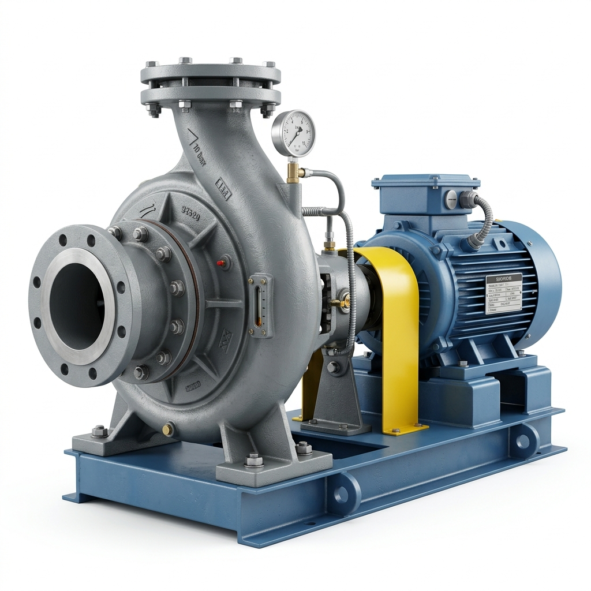
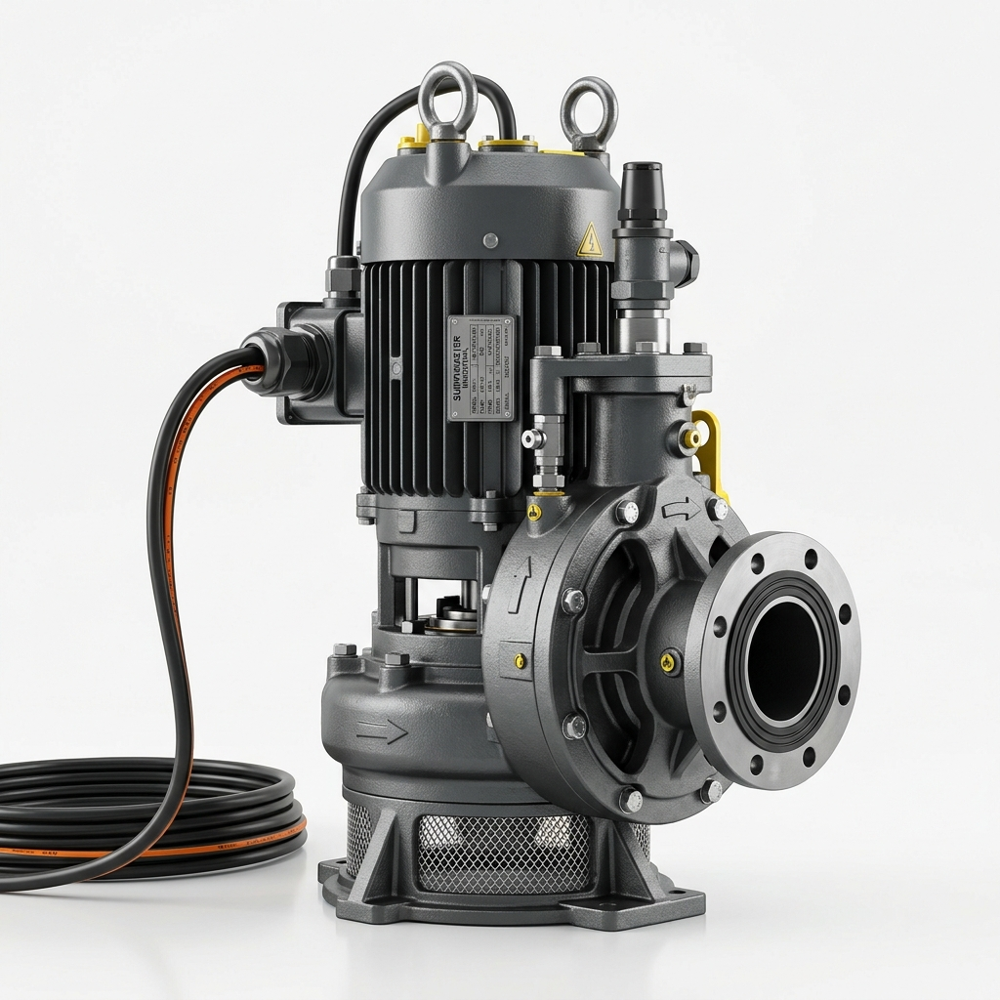
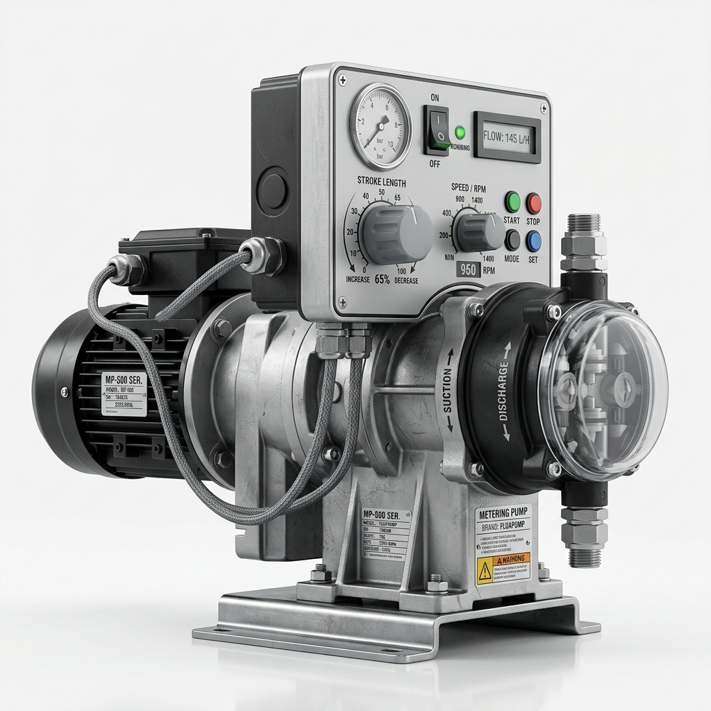
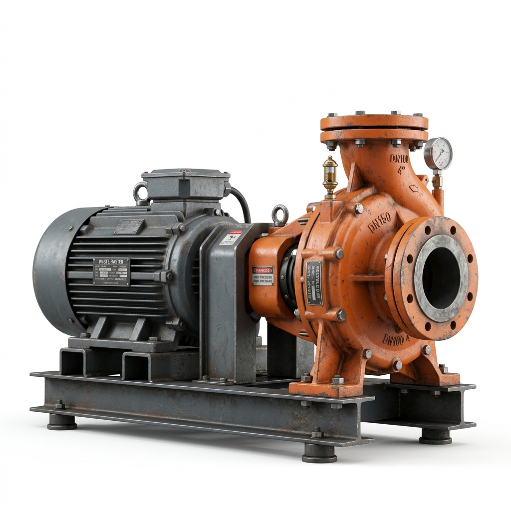
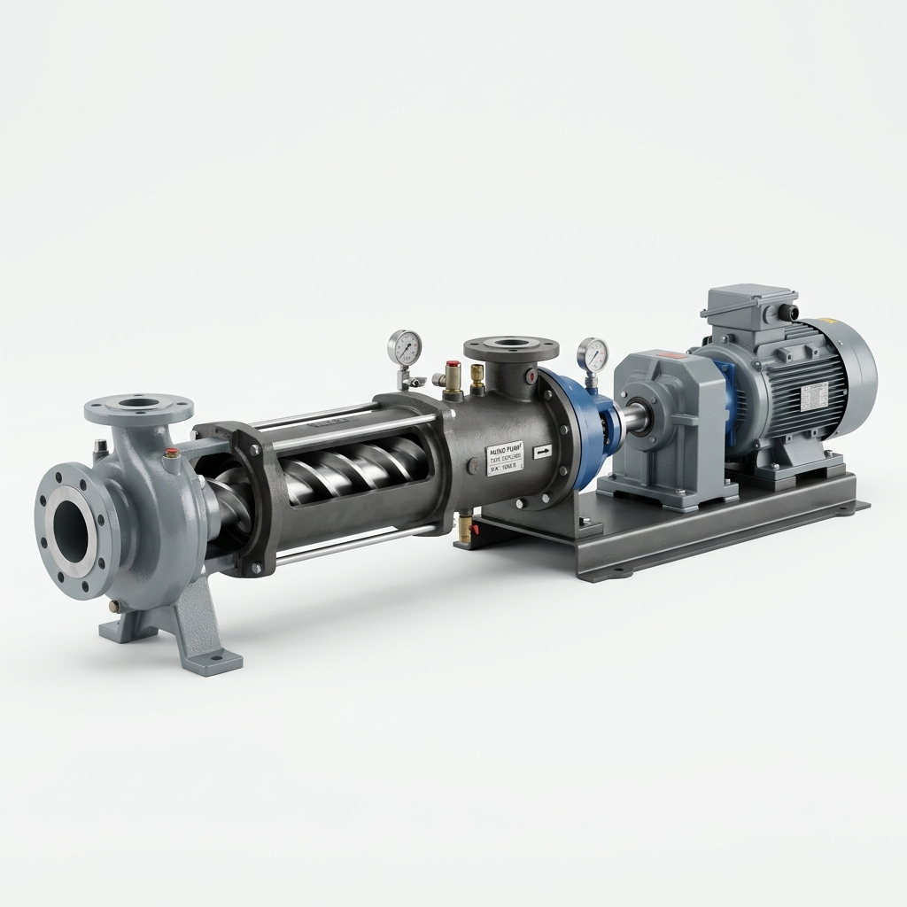
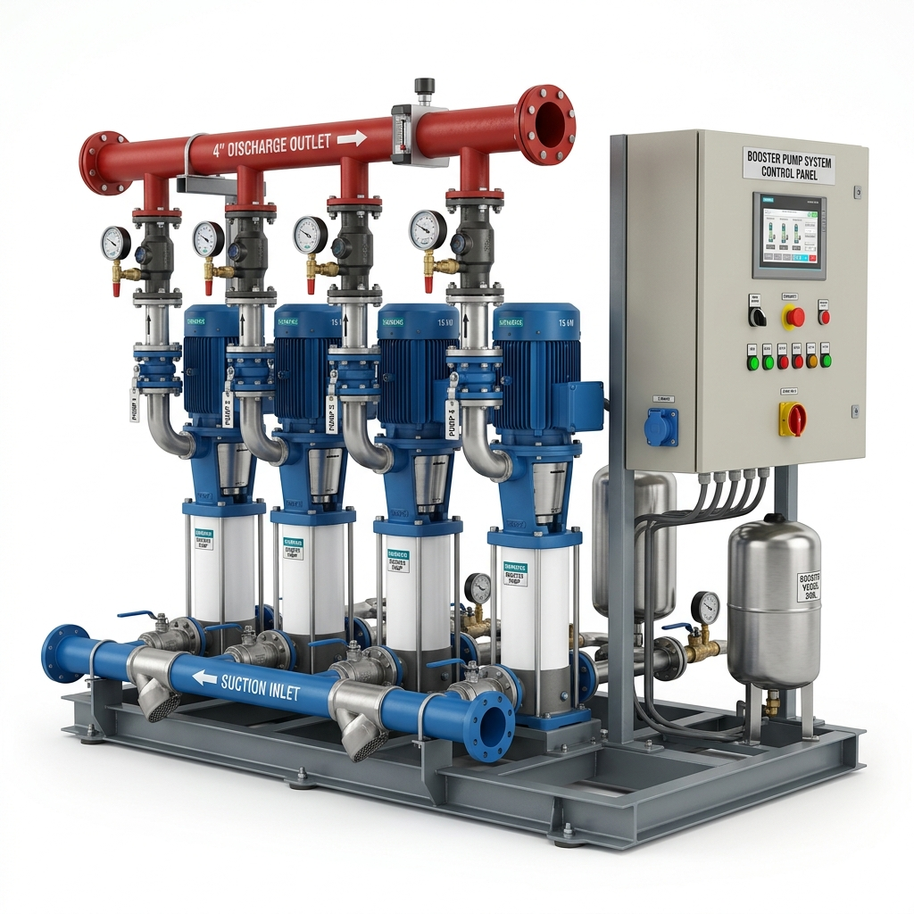

주요제품
비에이텍(주)의 축적된 기술력으로 완성된 고품질 산업용 펌프 라인업입니다.

편흡입 볼류트 펌프
산업 현장, 농업, 상수도 등 다양한 환경에서 안정적인 유체 이송을 보장하는 고효율 단단 볼류트 펌프입니다.
최적 적용 분야
- 산업용 급수 및 냉난방 순환, 일반 관개용
실무 유지보수 및 설계 강점
- 후면 인출 구조로 배관 분리 없이 점검 가능
- 임펠러 정밀 가공으로 진동·소음 억제

수중펌프
견고한 방수 설계와 강력한 모터를 탑재하여 깊은 우물이나 침수 구역의 배수 작업에 최적화된 수중 펌프입니다.
최적 적용 분야
- 하수처리장 오폐수, 침수 구역 비상 배수
실무 유지보수 및 설계 강점
- 이중 메커니컬 씰 적용으로 침수 완벽 차단
- 이물질 막힘을 최소화한 볼텍스 임펠러

정량펌프
화학 약품 투여 및 정밀 공정에 필수적인 제품으로, 오차 없는 정확한 유량 제어를 실현합니다.
최적 적용 분야
- 정수장 응집제 정밀 투입, 식품 가공 정량 이송
실무 유지보수 및 설계 강점
- 마이크로미터 다이얼로 운전 중 토출량 조절
- 내화학성이 우수한 특수 재질 적용

슬러지펌프
점성이 높거나 고형물이 섞인 오폐수 이송에 특화된 내마모성 설계의 강력한 슬러지 전용 펌프입니다.
최적 적용 분야
- 하수처리장 농축 슬러지, 제지/화학 공장 고점도 물질
실무 유지보수 및 설계 강점
- 고마모성 환경용 특수 열처리 부품 사용
- 진동을 억제하는 강력한 토크 전달 구조

일축나사식 모노펌프
맥동이 없고 정밀한 유량 제어가 가능하며, 고점도 물질 이송에 탁월한 성능을 발휘하는 프리미엄 펌프입니다.
최적 적용 분야
- 탈수기 이송 및 시멘트 몰탈, 화장품 원료 등 고점도 공정
실무 유지보수 및 설계 강점
- 맥동 없는 정량 압송
- 유체의 물성을 파괴하지 않는 비마찰 이송

부스터펌프
고층 빌딩 및 대규모 시설물에 일정한 수압을 유지 공급하기 위한 스마트 인버터 제어 부스터 펌프 시스템입니다.
최적 적용 분야
- 고층 아파트/상업용 빌딩 급수, 대규모 산업 단지
실무 유지보수 및 설계 강점
- 개별 인버터 장착으로 정밀 제어 및 전력 절감
- 스마트 컨트롤러 자동 보호 시스템